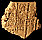

Curriculum tablet
This part of the tablet is a spelling exercise.
A cuneiform sign, which can be read as 'nish', is repeated down the left hand side. Other signs are written beside it to make different words. For example, half way down this section the signs read:
nish-gil
Scribes practised writing the same words in many ways which helped them learn different cuneiform signs.
|